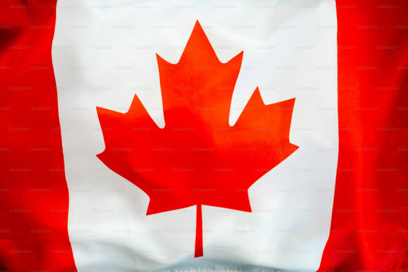

Suecia es una nación escandinava con miles de islas costeras y lagos interiores, junto con extensos bosques boreales y montañas nevadas. Sus principales ciudades, la capital oriental Estocolmo, Malmö y Gotemburgo en el suroeste, son costeras. La ciudad de Estocolmo está construida sobre 14 islas. Tiene más de 50 puentes, además de una ciudad antigua medieval, Gamla Stan, palacios reales y museos, como el Skansen al aire libre.

CARACTERISTICAS
Capital: Ottawa, aunque Toronto es la ciudad más grande y Montreal es un importante centro cultural.
Idioma: Inglés y Francés (especialmente en la provincia de Quebec).
Moneda: Dólar canadiense (CAD).
Gobierno: Monarquía constitucional con un parlamento y una democracia parlamentaria.
Geografía: El segundo país más grande del mundo, con montañas, bosques y más de 2 millones de lagos.
Clima: Varía desde subártico y polar en el norte hasta templado en el sur.
Economía: Recursos naturales como petróleo, gas y minerales, además de sectores como la tecnología y la agricultura.
Diversidad cultural: Un país multicultural con alto índice de inmigración y una sociedad inclusiva.
Educación y salud: Educación gratuita hasta el nivel secundario y un sistema de salud público y accesible.
Turismo: Destinos populares como las Montañas Rocosas, las Niágara Falls y las ciudades cosmopolitas como Vancouver y Toronto.